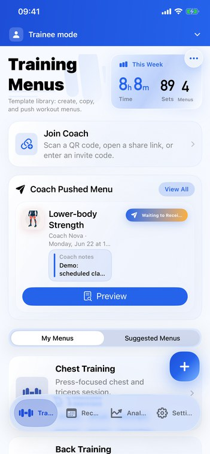
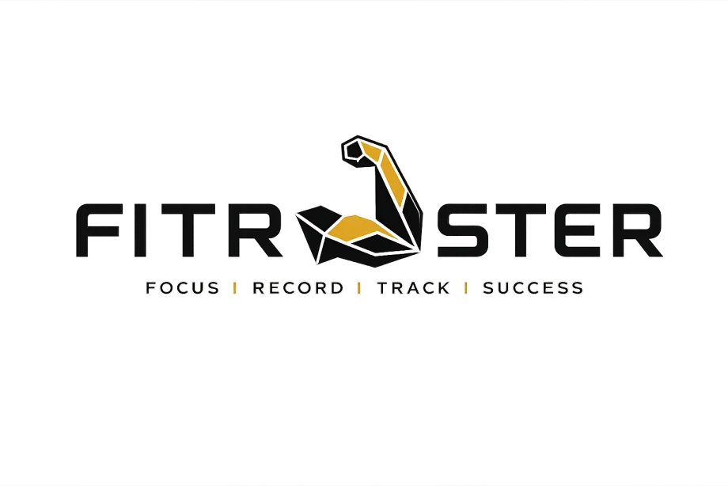
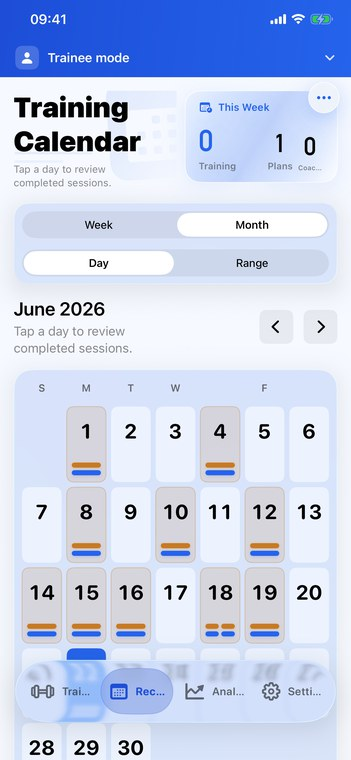
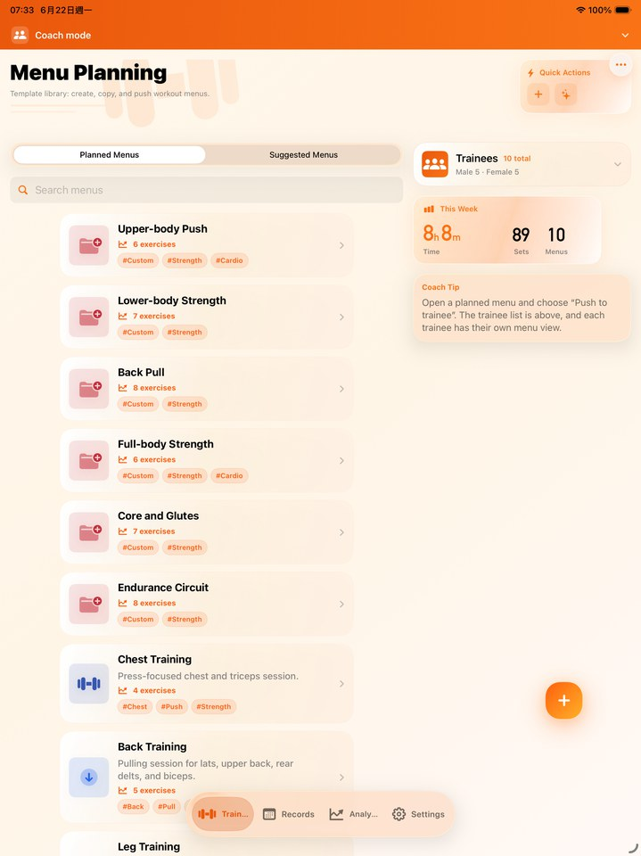
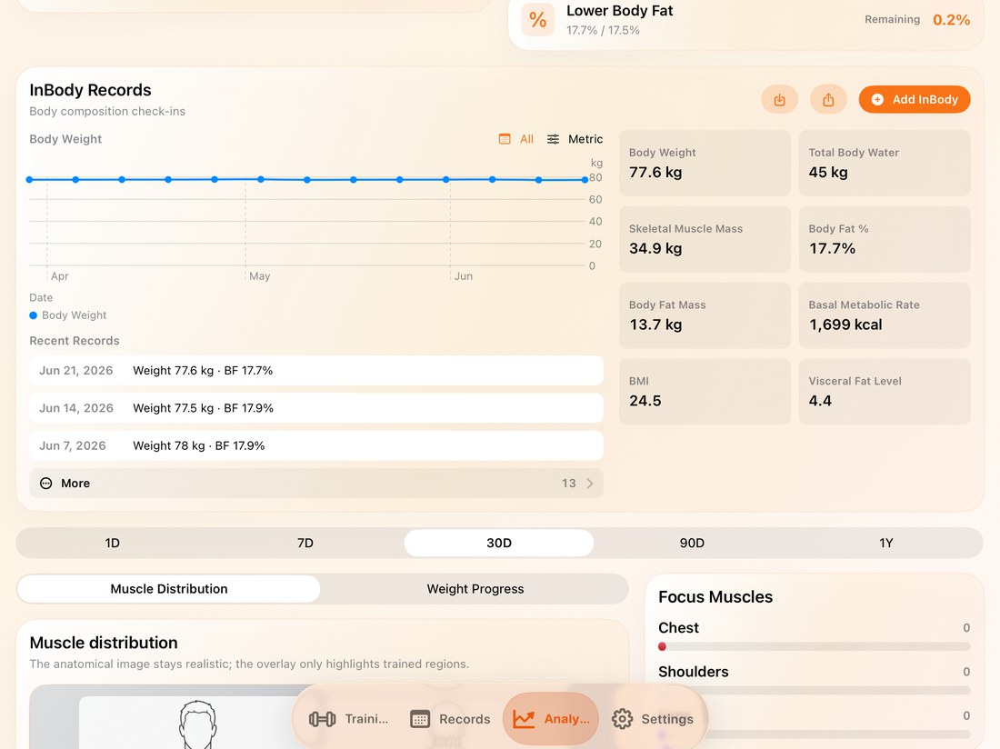

Flexible training menus
Use built-in exercises, rename movements freely, or build a custom catalog for your coaching language.

iOS training workspace
Plan training, coach athletes, and understand progress in one clean app.
FitRoster brings editable exercise names, custom routines, trainee schedules, coach delivery, training records, and practical analysis into a focused Apple-style workspace.


Real product screens
The page uses compact screenshots generated from the app capture set, with matching images for every supported site language.

Use built-in exercises, rename movements freely, or build a custom catalog for your coaching language.

Review completed training by date, role, and plan so progress stays connected to the work that created it.

Plan templates, distribute sessions, and read trainee context from a layout designed for repeated professional use.
Core capabilities
FitRoster is a practical performance tool: fast to update, clear to review, and structured enough for coach-trainee work.
Built-in exercise names follow the app language, while your custom names and coaching terms stay exactly as entered.
Add movements, organize menus, and turn recurring training ideas into reusable routines.
Send plans, receive trainee submissions, and keep review work attached to the right session.
Use volume, calendar records, goals, body entries, and muscle distribution to explain what changed.
Training workflow
The product story is simple: prepare training, record the work, review outcomes, then coach the next decision.
Build templates, customize exercise names, and prepare sessions for yourself or a trainee.
Record sets, reps, load, notes, and completed sessions with a layout made for repeated use.
Use calendars, records, goals, and analysis to understand what the training is producing.
Deliver the next plan and keep trainee feedback tied to the actual training history.

Analysis
FitRoster analysis is meant to support coaching decisions, not bury users in decorative charts.
Connect completed sessions to measurable work across time.
Explain balance, focus, and neglected areas with a clear visual summary.
Turn the data into the next plan, not just another report.
Usage guide
The guide covers setup, editable exercise names, custom exercises, coach-trainee workflows, records, analysis, backup, and settings with localized screenshots.